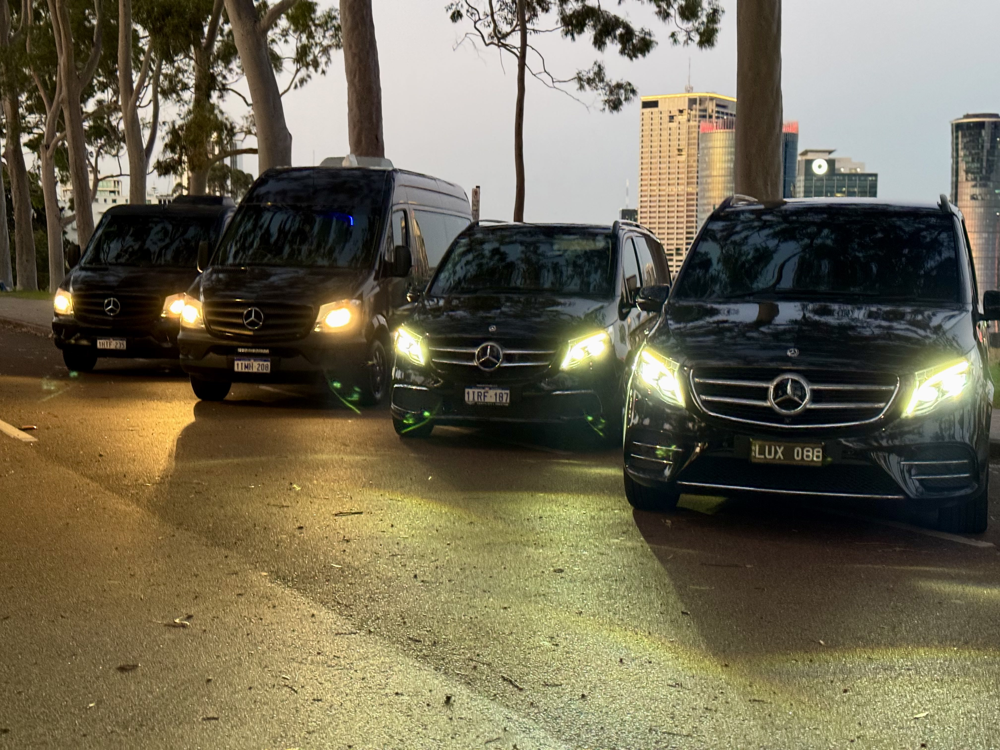

Elite Transport for High-Profile Clients
At Lux VIP Charters Perth, we specialise in discreet, seamless, and first-class transport services tailored specifically for celebrities, high-profile artists, and elite clientele. Our dedicated Celebrity Transport Division is designed to deliver uncompromising comfort, privacy, and precision from arrival to departure.
Perth's VVIP & Celebrity Service
- Dedicated Management Team: Every booking includes access to an exclusive Lux VIP management plan, with personalised scheduling of movements, timed drop-offs and pick-ups, and detailed coordination to match your event or touring itinerary.
- Professional Chauffeurs Only: We exclusively assign our most experienced and professionally presented drivers to all artist and celebrity movements. Our chauffeurs are trained in discretion, etiquette, and high-pressure scheduling.
- Live Operations Group Chat: We establish a private group chat for each job with your team, our operations manager, and assigned chauffeurs. This real-time communication ensures precise coordination and instant updates on vehicle locations and arrival times.
- Blacked-Out Luxury Fleet: All vehicles in our VIP fleet are fitted with tinted or fully blacked-out windows, ensuring total privacy at all times. Vehicles are cleaned and detailed before every assignment to reflect the luxury standard.
- Trusted by the Industry: From international touring artists to Australia’s most recognized celebrities, Lux VIP Charters Perth has been the trusted name behind the scenes. When the biggest names land in Perth, they choose us.
- Dignitary Protection Transport: Trusted by embassies, consulates, and federal agencies. We provide radio-equipped, coordinated and discreet VIP transport for diplomats and officials VVIP & Celebrity’s.
- Tailored Experiences: Whether you require a single airport transfer, a full-day tour, or multi-day artist itinerary transport, we tailor the experience to match your client’s brand and expectations. Bottled water, temperature control, specific music preferences, and quiet rides are all standard options we manage discreetly.
Meet Ken – Your VIP Transport Specialist
As the founder of Lux VIP Charters Perth, Ken personally oversees all celebrity and high-profile movements. With years of experience managing VIP logistics, he works directly with tour managers, agencies, and security teams to ensure every detail is flawlessly executed. When you book with Lux VIP, you’re not just hiring a service — you’re working with someone who understands the stakes and delivers with precision, professionalism, and care.
Require specialized transport?
Contact for VIP Services
.jpg)
 - Copy.jpg)